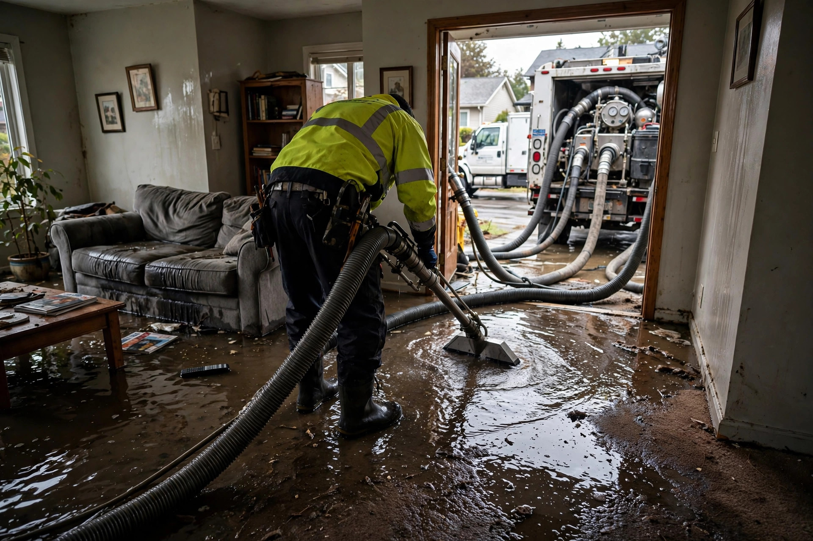

Home / Water Damage / Extraction
Boise, Idaho · 24/7 emergency responseWater on the floor? We get it out now.
Burst pipe at 2am, water heater let go, snowmelt in the basement — standing water doesn't wait, and neither do we.
What happens when you call
You call, we roll
Tell us what's happening — source, how much water, which rooms. We dispatch with the right equipment for what you describe.
Water comes out
Truck-mounted and portable extractors pull standing water fast. We work room by room until the floor is clear.
Moisture gets mapped
Walls, baseboards, and subfloor get metered. Anything wet gets marked — that's the drying plan.
Drying begins
Air movers and dehumidifiers go in the same visit when needed. We monitor until readings hit dry.
Boise emergencies we see every year
Snowmelt intrusion
March and April snowmelt overwhelms window wells and foundation drains. Basements and crawl spaces take on water in a single warm weekend.
Frozen pipe bursts
Boise's sub-20°F cold snaps split supply lines in exterior walls, attics, and garages. The burst happens at night; you find it in the morning.
Water heater and washer failures
A failed water heater can dump 40+ gallons in minutes. Supply hoses on washers are the other classic — they go without warning.
Extraction vs. drying: what's what
Extraction
Physical removal of standing water with extractors and pumps. This is the emergency phase — minutes and hours matter.
Structural drying
Air movers and dehumidifiers pull moisture from walls, floors, and framing over 2–4 days. Monitored with daily readings.
While we're on the way
Do these now if it's safe — they limit the damage before we arrive:
- Shut off the water at the main if the source is a burst pipe or failed hose.
- Kill power to wet areas at the breaker — never touch switches standing in water.
- Move rugs, electronics, and valuables to dry rooms.
- Don't use the HVAC — it can spread moisture and contaminants through ducts.
A burst pipe on a January night
Imagine waking at 3am to the sound of running water — a supply line in the garage wall split during a 12°F cold snap. By the time it's found, the garage and adjacent laundry room have an inch of standing water. Extraction starts with the truck-mount pulling the bulk water, then the baseboards come off and the lower drywall gets checked. Air movers run for three days. Because the response was fast, the subfloor dries without replacement. The IICRC S500 standard covers this process: IICRC S500.
Emergency questions
How fast can you get water out of my house?
For emergencies in Boise we aim to be on-site quickly and start extracting within the hour of arrival. A typical room takes 30 to 60 minutes of extraction; a whole flooded floor takes longer but we don't leave until the standing water is gone.
Should I try to remove the water myself first?
If it's safe — power off in wet areas, no electrical hazards — you can start with towels or a wet-vac on a small spill. For more than a thin layer across a room, call first. Every hour of standing water means more wicking into walls and subfloor.
Will my carpet have to be replaced?
Not always. Clean-water floods on carpet can often be extracted, dried, and saved. Carpet pad is usually replaced. Contaminated water (sewage, floodwater from outside) means the carpet goes — no exceptions.
What does emergency extraction cost?
It depends on how much water and how many rooms. We quote on-site after seeing it — extraction, drying equipment, and monitoring are itemized so you see exactly what you're paying for.
Do you work with insurance?
Yes. We document everything — source, extent, moisture readings, photos — in the format adjusters expect. Sudden events like burst pipes are commonly covered; we'll give you the paperwork either way.
Don't wait on standing water
Every hour it sits, it spreads further into walls and flooring. Call now and we'll tell you what to do in the next ten minutes while we're on the way.